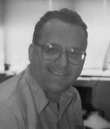

Please note: the AAS Obituaries are temporarily being hosted on this website while their full content is being ingested into the PubPub publishing platform newly adopted by the Bulletin of the American Astronomical Society. When the migration is complete, your existing links will take you to the final, migrated content. Contact peter.williams@aas.org with any questions.
Robert Michael Hjellming (1938-2000)
Robert Hjellming died of natural causes while scuba diving on July 29, 2000. A member of the National Radio Astronomy Observatory (NRAO) Basic Research staff, he is survived by his wife Carol and their five children.
Bob was born December 21, 1938, in Gary Indiana. After graduating from high school in Caldwell, Idaho, he attended the University of Chicago, earning a BS in physics in 1960 and an MS in physics in 1961. He began his doctoral studies at Chicago and the Yerkes Observatory working with W.A. Hiltner on the development of image tubes. He completed his PhD in astrophysics under Peter Vandervoort in 1965, with a dissertation on "Physical Processes in HII Regions." He continued to work in this area as a faculty member at Case Western Reserve University. He first came to the NRAO as a summer visitor in 1967. He joined the NRAO as an Associate Scientist in 1968, was promoted to Scientist in 1971, and granted tenure in 1973.
At the NRAO, Bob initially focused on the theory of the recently discovered radio recombination lines in HII regions, completing an analysis of the equilibrium equations for the populations of the high levels of the hydrogen atom. However, during this same period Bob became intrigued with the fine scale structure of HII regions and he realized that synthesis interferometry offered the possibility of making high resolution images of the nebulosity. Following up this insight resulted in two doctoral theses written under his supervision, one by William Webster, a student at Case Western Reserve, the other by Bruce Balick, a student at Cornell.
The lure of observational astronomy proved to be irresistible to this theorist. In 1970 Hjellming, working with Campbell Wade, successfully observed the expanding ionized envelopes of Nova Delphini 1967 and Nova Serpentis 1970, the first radio detections of this class of object. Shortly afterwards Wade and Hjellming detected the red supergiant Antares, and then, in an experiment which was to a1ter Bob's research career forever, he and Wade detected the radio counterpart of Sco X-I, the brightest X-ray source in the sky. The importance of this work is exemplified by the source Cyg X-I, one of the best candidates for a stellar black hole, whose proposed optica1 identification was confirmed in 1972 using the precise radio position measured by Wade and Hjellming.
Much of Bob's early work at the NRAO was done with the Green Bank Interferometer (GBI), designed as a prototype for the more powerful Very Large Array (VLA) built in the late 1970s in New Mexico. Bob moved to New Mexico with that project in 1976, making many important contributions to the design and testing of the instrument. He took a special interest in data reduction software, often forming a link between the astronomers and computer programmers. He wrote the "project book" document and later headed, for several years, the programmer group designing the VLA data reduction software. He originated several ideas about data display which remain standard today. And, of course, he wrote the comprehensive user introduction and manual for the VLA. His "Green Book" was a textbook and bible for the first generation of VLA users, and was a significant factor in the VLA being used by astronomers from many subfields, rather than being a specia1ized instrument used by a few adepts.
Shortly after moving to New Mexico, Bob became an adjunct professor at New Mexico Tech (NMT), and maintained that affiliation until his death. Apart from supervising a series of master's and doctoral theses (including those of Shawn Ewa1d, Robert Newell, and Xiaohong Han), and working patiently with innumerable summer students, Bob developed and taught the first radio astronomy course at NMT.
Bob had many ta1ents and interests which he applied to further the work of the NRAO. With his interest in computing, it was natura1 that he became associated with the AIPS++ Project, a major internationa1 initiative in astronomical software, and he served as AIPS++' s first Project Scientist. As an early user and tester, Bob edited the AIPS++ newsletter from its inception in 1998 until his death. With his interest in arrays, he played a key part in the initia1 planning for the Atacama Large Millimeter Array (ALMA). He made the first quantitative studies of possible array configurations, and explored the possibility of combining telescopes of two different sizes to more faithfully image large sources on the sky.
One of the hallmarks of Bob's career was an ability to see the possibilities inherent in new NRAO instruments. One important instance was the famous Galactic binary, SS-433. In a classic series of papers with Ken Johnston and other co-authors based on early observations with the VLA, Bob showed that the 0.26c motions implied by optical measurements result a1so in extended radio jets having high proper motion. The precessing jet model he used has become the standard paradigm for Ga1actic jets and Bob returned to it in 1995 in ana1yzing his radio images of the second Ga1actic microquasar discovered, GRO J1655-40. Once again he was among the pioneers in using a new radio telescope, the Very Long Baseline Array (VLBA),to image this and other Galactic X-ray binaries and transients.
The last research project Bob saw through to completion, an analysis of radio observations of the X-ray transient V4641 Sgr (to be published in November 2000 in the Astrophysical Journal ), typifies the breadth of Bob's interests. The data were taken as part of his on-going program of monitoring radio emission from Ga1actic X-ray sources, carried out for almost 30 years with both the GBI and, since 1977, the VLA; they were deconvolved using a new a1gorithm suggested by NMT student Dan Briggs and implemented in AIPS++, making this the first published scientific paper to use that package; and the analysis involved a major extension of the precessing jet model he developed in 1981. Bob remained an active and enthusiastic scientist throughout his life, and was a va1ued and respected colleague who will be sorely missed.
Photo courtesy of the National Radio Astronomy Observatory
Obituary written by: Michael P. Rupen (National Radio Astronomy Observatory), David E. Hogg (National Radio Astronomy Observatory)
BAAS Citation: BAAS, 2000, 32, 1670
SAO/NASA ADS Bibcode: 2000BAAS...32.1670R